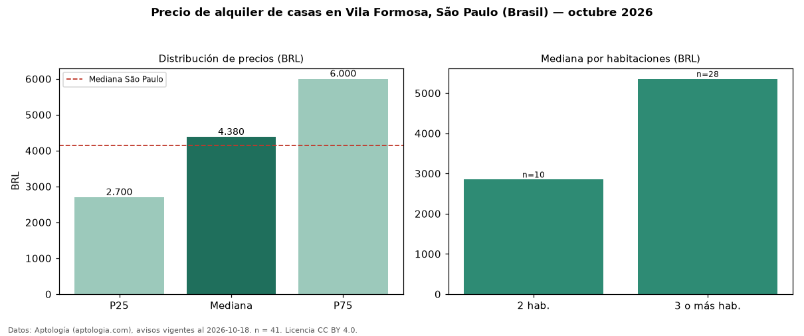

Precio de alquiler de casas en Vila Formosa, São Paulo (Brasil) — octubre 2026
BRL 4.380 al mes es el canon mediano de casas en alquiler en Vila Formosa, São Paulo (Brasil) (n = 41 avisos). Eso es 6 % por encima de la mediana de São Paulo para casas (BRL 4.140). Por metro cuadrado, la mediana es BRL 28,33/m² al mes (n = 41 avisos con área), 6 % por debajo de São Paulo (BRL 30,00/m²). Por precio mediano es el puesto 7 de 7 bairros de São Paulo con al menos 30 avisos de casas en alquiler (BRL): entre las más económicas. El área mediana anunciada es 150 m². El segmento con más oferta es el de 3 o más habitaciones (28 avisos, mediana BRL 5.355); pasar de 2 habitaciones a 3 o más habitaciones cambia la mediana +88 %. La mitad central de los avisos va de BRL 2.700 a BRL 6.000 (razón 2,2), una dispersión alta. 91 % de los avisos con el dato declara parqueadero o cochera. Datos: Aptología (aptologia.com), CC BY 4.0 — https://www.aptologia.com/br/aluguel/sao-paulo. Archivos: PDF, CSV con las cifras y gráfica PNG.

| Avisos únicos | 41 |
|---|---|
| Percentil 25 | COP 2.700 |
| Mediana | COP 4.380 |
| Percentil 75 | COP 6.000 |
| Mediana por m² | COP 28 |
Fuente: avisos vigentes de portales inmobiliarios recopilados por Aptología, deduplicados (mínimo 30 avisos únicos por celda). Precios pedidos, no cerrados. Fecha: 2026-10-18.